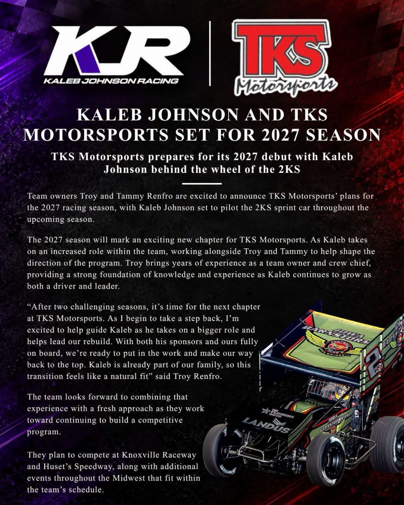

Kaleb Johnson and TKS Motorsports set for 2027
KR Kaleb Johnson Racing joins forces with TKS Motorsports, putting Kaleb Johnson full-time in the No. 2KS for his 2027 debut season. Another seat filled before the snow even falls.

KR Kaleb Johnson Racing and TKS Motorsports, owned by Troy and Tammy Renfro, have announced a partnership for 2027. Kaleb Johnson will drive the No. 2KS full-time in what the team calls his debut season.
Johnson will also take on an increased role shaping the program alongside Troy Renfro, who serves as owner and crew chief. According to the announcement, Renfro is taking a step back from the driver's seat after two challenging seasons.
The team plans to race at Knoxville Raceway, Huset's Speedway and other Midwest tracks.
The car will carry a black, green and red scheme, with support from the Iowa Barnstormers, Landus and The Flooring Guys.